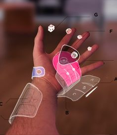
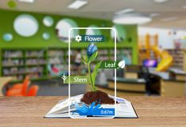
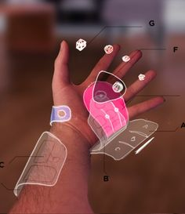
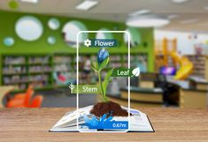

Augmented Reality(AR)
What is Augmemted Reality?
Augmented reality is an interactive experience that enhances the real world with computer-generated perceptual information. Using software, apps, and hardware such as AR glasses, augmented reality overlays digital content onto real-life environments and objects.
Augmented reality (AR) is an enhanced version of the real physical world that is achieved through the use of digital visual elements, sound, or other sensory stimuli and delivered via technology. It is a growing trend among companies involved in mobile computing and business applications in particular. Amid the rise of data collection and analysis, one of augmented reality’s primary goals is to highlight specific features of the physical world, increase understanding of those features, and derive smart and accessible insight that can be applied to real-world applications. Such big data can help inform companies’ decision making and gain insight into consumer spending habits, among others.
Augmented reality continues to develop and become more pervasive among a wide range of applications. Since its conception, marketers and technology firms have had to battle the perception that augmented reality is little more than a marketing tool. However, there is evidence that consumers are beginning to derive tangible benefits from this technology and expect it as part of their purchasing process.
Some experts have long speculated that wearable devices could be a breakthrough for augmented reality. Smartphones and tablets show a tiny portion of the user’s landscape, but smart eyewear, for example, may provide a more complete link between real and virtual realms if it develops enough to become mainstream.
.png)

 


